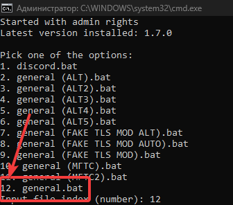

ТОЛЬКО НА ВИНДЕ!!1
если хотите чтобы у вас работал великий дискорд и ютуб бесплатно, то вот инструкция:
1. скачиваем архив с последнего релиза отсюда
2. распаковываем, и запускаем service_install.bat
3. возможно будет ругаться SmartScreen, скипаете и запускаете
4. дальше вам выдаст список из батников:

в конце списка должен быть general.bat. пишем в консоль цифру, которая написана слева от него (с каждым обновлением меняется, сейчас это 12)
5. нажимаем энтер и ждём. когда перестанет писать в консоль, значит закончилось, проверяем
6. если не получилось, и дискорд всё еще не работает, то перепроверьте что выполнили все шаги правильно и попробуйте ещё раз
P.S. часто есть случаи что после этого скрипта дискорд работает, а ютуб нет, поэтому проверяйте через дискорд
если после установки у вас заработал дискорд а потом перестал, то выполните инструкцию заново. такое бывает и иногда запрет слетает.